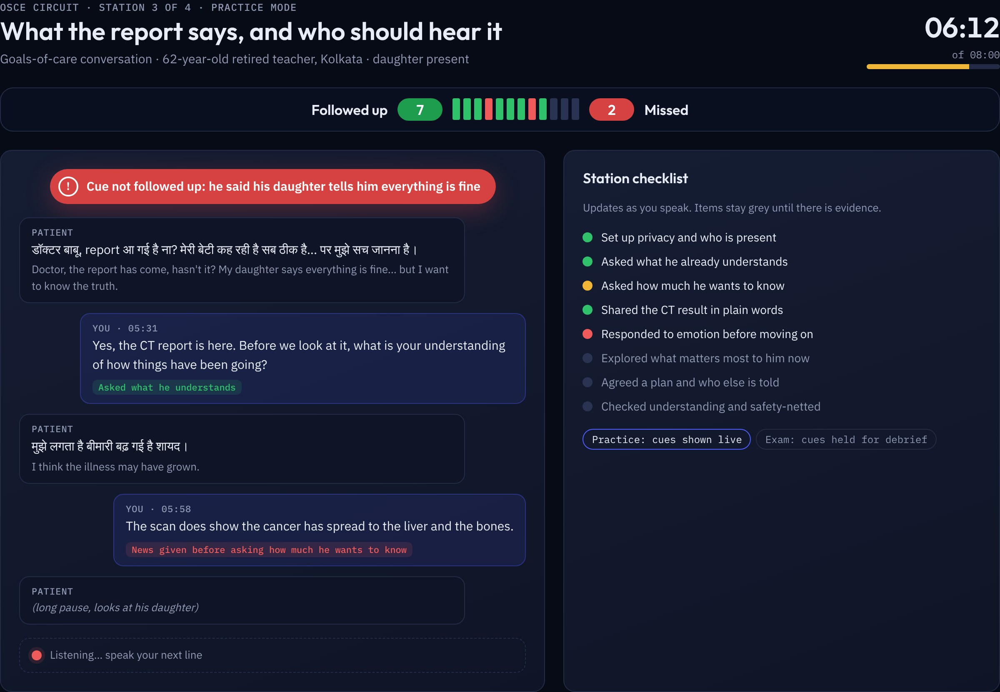

ML4H 2026 submission 396: preprint v4
Feedback interface mock-up
Version 4 is version 3, which has the corrected Figure 1, plus a design mock-up of the learner-facing feedback loop for OSCE-style stations. The mock-up shows live cues in practice mode, a debrief that sorts skills by evidence, spaced drills on weak skills, a result screen and progress over time. It is one figure in the main text (Figure 2) and an appendix with four more screens.
All learner data in the mock-up are synthetic, for one invented learner. Case titles and the nine feedback domains come from the system; attempts, scores, dates and timings do not. No learner outcomes are reported.
- Interactive mock-up
- Paper v4 (PDF)
- Main LaTeX file
- Full LaTeX source (zip), which builds with pdflatex and BibTeX as described in its README
